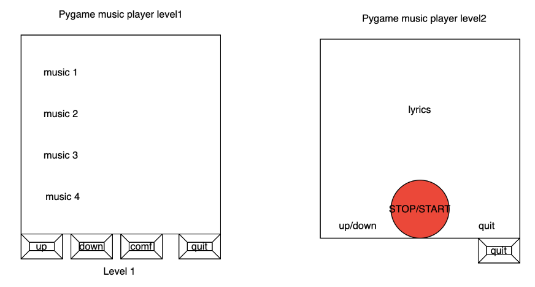

Gesture Music Player
A Project By Shutong Li , Mingqi Cao, Hardik Hedaoo
Demonstration Video
Introduction
Gesture recognition combines Pygame and OpenCV to run on Raspberry Pi. This program is divided into two main parts: Pygame for user interface and media playback control, while OpenCV and MediaPipe are used for gesture recognition to remotely control the player. Ultimately, the music player is able to achieve the following four functions:
- Runs on the Raspberry Pi as a graphical music player.
- Music playback (e.g. play, pause, switch songs, adjust volume) can be controlled through physical buttons or touch screen gestures.
- Lyrics are displayed and scroll as the music plays.
- Use gesture control to simulate the corresponding functions of the keys, allowing you to control the player without touching the screen.
Project Objective:
The existing mainstream music player interfaces on the market basically control music playback by touching the screen or manipulating mechanical buttons. The final project this time: the gesture music player can control the playback of the music player only by recognizing hand movements.
Design and Testing
OpenCV gesture recognition design
Step1: Install the settings library
First, install OpenCV in RPi and use the MediaPipe Python library to identify and track the position of 21 key points of the hand. Figure 1 shows the composition of 21 key points corresponding to the palm.
Step2: Initialize the camera and MediaPipe model
Use OpenCV's cv2.VideoCapture to initialize the camera and set the camera's resolution. Then create a MediaPipe Hands object and set the minimum detection confidence and tracking confidence.
Step 3: Image capture and preprocessing
ULoop through each frame of image from the camera. Flip and convert the image to RGB format because MediaPipe requires the input image to be in RGB format.
Step 4: Gesture detection and key point data analysis
Use MediaPipe Hands to process each frame of image and obtain the position of the hand key points. If hand keypoints are detected, MediaPipe returns a list of keypoints, each keypoint has its x and y coordinates in the image and then parses the keypoint list. Determine which fingers are straight by comparing each fingertip keypoint to the y-coordinate of its next joint. If the y-coordinate of the fingertip is smaller than the y-coordinate of the PIP joint, the finger can be considered to be straight. Gesture detection is shown in the figure below:
The values of x, and y are the coordinate axis values within the corresponding recognition range, and the arrows represent the direction of finger movement. By identifying the number of fingers and hand coordinate positions, corresponding functions are generated, such as switching songs, volume control and exiting these functions.
Step 5: Respond. Interaction between pygame and openCV
When an operation is triggered, by creating a specific tag file (such as left.txt, right.txt, etc.) in the file system, the music player's main loop will respond to the existence of this file and perform the corresponding action. After the gesture is recognized and processed, the relevant mark files will be deleted to prevent repeated execution of commands. At the same time, the camera continues to capture the next frame of image. The entire process is looped to achieve real-time gesture recognition and response.
Pygame music player interface design
The entire interface design is built around Pygame's rendering loop, which implements an interactive music playback interface by regularly drawing graphic elements and processing user input.
By displaying buttons and lyrics on the screen, users can interact with the player through the touch screen or four GPIO mechanical switches, such as selecting songs, controlling play/pause, adjusting volume, etc. At the same time, the music player supports gesture recognition control to achieve the same function.
The music playback interface is divided into level 1 and level 2. level 1 displays the song playlist, and level 2 jumps to the lyrics scrolling interface after the user selects to start playing. The player uses the rolling_lyrics() function to implement the lyrics scrolling function.
Lyrics are stored in a list, and this function will update the displayed lyrics line based on the current line and scrolling speed. We are not yet able to realize the real-time corresponding display of music and lyrics. We only let the lyrics move up to the edge of the screen at a certain speed and then disappear. Complete lyrics scroll
OpenCV gesture recognition & Pygame music player test
ModuleNotFoundError for cv2
Initially, there was an issue where the cv2 module (OpenCV) was not being found when running gesture_control.py through a shell script (start.sh), despite working fine when run independently. This problem was indicative of an environment discrepancy, where the Python environment accessed by the shell script did not have the cv2 module installed. This is a common issue in Python development, where different environments (or different Python interpreters) have different sets of installed modules.
Integration of imusic.py and gesture_control.py
The project involved integrating two Python scripts: imusic.py for music playback control and gesture_control.py for gesture recognition. The integration required gesture_control.py to trigger actions in imusic.py based on recognized hand gestures. This was achieved by using file creation as a signaling mechanism between the two scripts. Specific gestures would create designated files, which imusic.py would detect and respond to by controlling music playback.
Running Scripts with Sudo Privileges
There was a requirement for imusic.py to be run with sudo privileges when started from gesture_control.py. This presented a challenge, as running scripts with sudo can introduce security risks and complications, especially in a non-interactive environment. The solution involved using the subprocess module to start imusic.py with sudo, ensuring that the script had the necessary permissions to perform its operations.
Rapid Toggling and Gesture Conflict
Two specific issues were encountered with gesture recognition: rapid toggling between play and pause states, and a conflict between selecting the second music track and swipe gestures. To address these, the gesture recognition logic in gesture_control.py was refined. A delay was introduced to prevent rapid toggling, and the gesture detection was adjusted to more clearly differentiate between swiping and selecting the second track. This involved fine-tuning the gesture recognition parameters and adding conditional checks to distinguish between different types of gestures.
GPIO Button Integration for Script Termination
A requirement was to allow for the script to be terminated using a GPIO button on the Raspberry Pi. This was implemented by setting up a GPIO listener in gesture_control.py. When the designated button was pressed, the script would perform a cleanup, releasing resources and terminating gracefully. This feature added a physical interaction element to the project, allowing for a hardware-based control mechanism.
Result
The project requirements are basically realized, which is to be able to interact with the music player using gestures. The only disadvantage is that the camera is very sensitive and has a high transmission delay. The specific phenomenon is that if two or more palms appear on the screen, it will make a wrong judgment. At the same time, the gestures should not be made too fast during the test, because the system delay is very high, and too fast movements often cannot be captured by picamera, making it impossible to recognize.
Conclusion
Overall, this was a great project. We use Raspberry Pi and OpenCV to create the project. Integrate traditional music player with gesture recognition function for control. Different operating modes can bring completely different experiences. Although the test results obviously need further improvement, such as whether the music player can search for songs online, or whether the scrolling of lyrics in the second-level directory can scroll according to the music beat, etc. Maybe in future plans, we need to further modify the code or replace the camera to improve the transmission speed. The combination of OpenCV and Rpi will definitely lead to some better projects, there is no doubt about it.
Work Distribution
Project group picture
Shutong Li
sl2865@cornell.edu
Designed the initial interface of the music player and test
Hardik Hedaoo
hgh36@cornell.edu
Designed the gesture control part and test

Mingqi Cao
mc2592@cornell.edu
Designed music control and the playing interface of the app and test
Parts List
- Raspberry Pi $35.00
- Raspberry Pi Camera V2 $25.00
Total: $60.00
Code Appendix
//imusic.py
from pygame.locals import *
import RPi.GPIO as GPIO
import pygame
import time
import os, sys
# set up the enviroments
os.putenv('SDL_VIDEODRIVER', 'fbcon') # Display on piTFT
os.putenv('SDL_FBDEV', '/dev/fb1')
os.putenv('SDL_MOUSEDRV', 'TSLIB') # Track mouse clicks on piTFT
os.putenv('SDL_MOUSEDEV', '/dev/input/touchscreen')
GPIO.setmode(GPIO.BCM)
GPIO.setwarnings(False)
GPIO.setup(17, GPIO.IN, pull_up_down=GPIO.PUD_UP)
def GPIO17_callback(channel):
print("Button 17 has been pressed")
sys.exit()
STOP = True
RUN = True
PLAY = False
# Initialize the Pygame
pygame.init()
#pygame.mouse.set_visible(False)
# Basic configuration for the game
size = (width, height) = (320, 240)
screen = pygame.display.set_mode(size)
FPS = 40
clock = pygame.time.Clock()
WHITE = 255,255,255
BLACK = 0,0,0
RED = 255,0,0
GREEN = 0,255,0
background_image = pygame.image.load("bg.jpeg")
background_image = pygame.transform.scale(background_image, (width, height))
# Load lyrics
lyrics = [
"I pop the pain away,",
"I slide the pain away",
"I pop the pain away",
"I slide the pain away",
"I picked you up when you",
"Fell and cut your knee",
"Told you not to cry",
"and held you Close to me",
"I hope I'm not too late",
"To set my demons straight",
"I know I made you wait",
"But how much can you take?",
"I hope you see the God in me",
"I hope you can see",
"And if it's up,",
"stay down for me",
"Yeah",
]
#music list
music_list = [
"Die Hard Drive",
"Miracle on the 34th Line of Code",
"The Grinch Who Hacked Chreistmas",
"This is line 1",
"This is line 2",
"This is line 3",
"This is line 4",
"This is line 5",
"And so on...",
]
# Button and Text info configuration
history_content_font = pygame.font.Font(None, 20)
history_title_font = quit_button_font = pygame.font.Font(None, 30)
center_button_font = pygame.font.Font(None, 20)
font = pygame.font.Font(None, 36)
quit_button = {"prev": (50,220), "next":(270, 220)}
stop_button = {'stop': (160, 220)}
def draw_buttons():
# draw the quit button
for text, position in quit_button.items():
text_surface = quit_button_font.render(text, True, WHITE)
rect = text_surface.get_rect(center=position)
screen.blit(text_surface, rect)
# draw the center button
for text, position in stop_button.items():
if STOP:
text = "play"
text_surface = center_button_font.render(text, True, BLACK)
rect = text_surface.get_rect(center=position)
screen.blit(text_surface, rect)
def draw_circle():
if STOP:
# draw green color when panic stopped
pygame.draw.circle(screen, GREEN, (160,220), 20)
else:
# draw red color when not panic stopped
pygame.draw.circle(screen, RED, (160,220), 20)
def render_lines(start_line, num_lines):
rendered_lines = []
for i in range(start_line, start_line + num_lines):
rendered_lines.append(font.render(lyrics[i], True, WHITE))
return rendered_lines
scroll_speed = 15 # pixels per second
current_line = 0
scroll_timer = time.time()
scroll_position = 0
frozen = False
frozen_lines = []
elapsed_time = time.time() - scroll_timer
start_index = 0
selected_index = None
# Set up scrolling variables
scroll_pos = 0
button_height = font.get_linesize() + 10
def rolling_lyrics():
global scroll_speed, current_line, scroll_timer, scroll_position, frozen, frozen_lines, lyrics, elapsed_time
lines_to_display = 4
if current_line + lines_to_display >= len(lyrics):
current_line = 0
frozen = True
frozen_lines = lyrics[-3:]
# Display three lines at a time based on the reverse scroll position
if not frozen:
# Calculate scrolling
for i, text_line in enumerate(render_lines(current_line, lines_to_display)):
y = height // 2 - font.get_linesize() // 2 + i * font.get_linesize() - scroll_position
screen.blit(text_line, (width // 2 - text_line.get_width() // 2, y))
elapsed_time = time.time() - scroll_timer
if elapsed_time > len(lyrics[current_line]) / scroll_speed:
current_line += 1
scroll_timer = time.time()
scroll_position = 0
# Update scroll position based on elapsed time
scroll_position = int(elapsed_time * scroll_speed)
# Display the frozen lines when scrolling is frozen
if frozen:
for i, frozen_line in enumerate(lyrics[-3:]):
y = height // 2 - font.get_linesize() // 2 + i * font.get_linesize()
text_line = font.render(frozen_line, True, WHITE)
screen.blit(text_line, (width // 2 - text_line.get_width() // 2, y))
pygame.display.flip()
clock.tick(30)
def play_music(music):
screen.blit(background_image, (0, 0))
draw_circle()
draw_buttons()
# cmd = "mplayer /home/pi/Music/" + str(music) + ".mp3"
# os.system(cmd)
rolling_lyrics()
pygame.display.flip()
clock.tick(30)
# Function to render buttons
def render_buttons(start_index):
rendered_buttons = []
for i, music_item in enumerate(music_list[start_index:start_index+5]):
button_y = i * button_height + scroll_pos
button_rect = pygame.Rect(50, button_y, width - 100, button_height)
rendered_buttons.append((music_item, button_rect))
return rendered_buttons
def init_interface():
global RUN, start_index, selected_index, scroll_pos, scroll_speed, button_height
# Set up the clock
clock = pygame.time.Clock()
font = pygame.font.Font(None, 20)
# Set up button variables
button_color = (100, 100, 255)
selected_button_color = (255, 100, 100)
# Display buttons
for music_item, button_rect in render_buttons(start_index):
button_color_to_use = selected_button_color if selected_index == start_index else button_color
pygame.draw.rect(screen, button_color_to_use, button_rect)
text = font.render(music_item, True, (0, 0, 0))
screen.blit(text, (button_rect.x + 10, button_rect.y + 5))
pygame.display.flip()
clock.tick(30) # Adjust the frame rate as needed
if __name__ == "__main__":
ts = time.time()
GPIO.add_event_detect(17, GPIO.FALLING, callback=GPIO17_callback, bouncetime=500)
volume = 0.5
while RUN and (time.time()- ts < 120):
for event in pygame.event.get():
if event.type == pygame.QUIT:
RUN = False
elif event.type == pygame.MOUSEBUTTONDOWN:
pass
#if event.button == 4: # Scroll Up
# start_index = max(0, start_index - 1)
#elif event.button == 5: # Scroll Down
# start_index = min(len(music_list) - 5, start_index + 1)
#if event.button == 1: # Left mouse button
# for i, (_, button_rect) in enumerate(render_buttons(start_index)):
# if button_rect.collidepoint(event.pos):
# PLAY = True
# music = i + 1 + start_index
# Add action when a button is clicked here
cmd = ""
if os.path.exists("left.txt") and PLAY: #prev
#os.system("echo q > /home/pi/Project/fifo")
#music -= 1
#cmd = "sudo SDL_VIDEODRIVER=fbcon SDL_FBDEV=/dev/fb1 mplayer -vo sdl -framedrop -input file=/home/pi/Project/fifo /home/pi/Project/" + str((music) % 3) + ".mp3"
music = (music - 1) % 3 + 1
pws = "/home/pi/Project/" + str(music) + ".mp3"
pygame.mixer.music.load(pws)
pygame.mixer.music.play()
frozen = not frozen
STOP = not STOP
#os.system(cmd)
os.system("rm left.txt")
elif os.path.exists("right.txt") and PLAY: #next
music = (music + 1) % 3 + 1
pws = "/home/pi/Project/" + str(music) + ".mp3"
pygame.mixer.music.load(pws)
pygame.mixer.music.play()
frozen = not frozen
STOP = not STOP
#os.system(cmd)
os.system("rm right.txt")
elif os.path.exists("down.txt") and PLAY: #vulume down
volume = max(0, volume - 0.1)
pygame.mixer.music.set_volume(volume)
os.system("rm down.txt")
elif os.path.exists("up.txt") and PLAY: #vulume up
volume = min(1, volume + 0.1)
pygame.mixer.music.set_volume(volume)
os.system("rm up.txt")
elif os.path.exists("pause.txt") and PLAY:
STOP = not STOP
frozen = not frozen
pygame.mixer.music.pause()
os.system("rm pause.txt")
elif os.path.exists("up.txt") and not PLAY:
start_index = max(0, start_index - 1)
os.system("rm up.txt")
elif os.path.exists("down.txt") and not PLAY:
start_index = min(len(music_list) - 5, start_index + 1)
os.system("rm down.txt")
elif os.path.exists("1.txt") and not PLAY: #next
pws = "/home/pi/Project/" + str((1 + start_index) % 3 + 1) + ".mp3"
pygame.mixer.music.load(pws)
pygame.mixer.music.play()
#os.system(cmd)
music = 1 + start_index
PLAY = True
os.system("rm 1.txt")
elif os.path.exists("2.txt") and not PLAY:
cmd = "/home/pi/Project/" + str((start_index + 2) % 3 + 1) + ".mp3"
#os.system(cmd)
pygame.mixer.music.load(cmd)
music = 2 + start_index
PLAY = True
os.system("rm 2.txt")
elif os.path.exists("3.txt") and not PLAY:
cmd = "/home/pi/Project/" + str((start_index + 3) % 3 + 1) + ".mp3"
#os.system(cmd)
pygame.mixer.music.load(cmd)
music = 3 + start_index
PLAY = True
os.system("rm 3.txt")
elif os.path.exists("4.txt") and not PLAY: #next
cmd = "/home/pi/Project/" + str((start_index + 4) % 3 + 1) + ".mp3"
music = 4 + start_index
pygame.mixer.music.load(cmd)
PLAY = True
os.system("rm 4.txt")
elif os.path.exists("5.txt") and not PLAY:
cmd = "/home/pi/Project/" + str((start_index + 5) % 3 + 1) + ".mp3"
os.system(cmd)
music = 5 + start_index
pygame.mixer.music.load(cmd)
PLAY = True
os.system("rm 5.txt")
screen.blit(background_image, (0, 0))
if not PLAY:
init_interface()
else:
play_music(music)
#os.system(cmd)
cmd = ""
pygame.quit()
//gesture_control.py
import cv2
import mediapipe as mp
import pyautogui
import os
#import subprocess
imusic_started = False
mp_drawing = mp.solutions.drawing_utils
mp_hands = mp.solutions.hands
# Constants for the webcam window size
wCam, hCam = 640, 480
# IDs of finger tips in hand landmarks
tipIds = [4, 8, 12, 16, 20]
state = None
def fingerPosition(image, handNo=0):
lmList = []
if results.multi_hand_landmarks:
myHand = results.multi_hand_landmarks[handNo]
for id, lm in enumerate(myHand.landmark):
h, w, c = image.shape
cx, cy = int(lm.x * w), int(lm.y * h)
lmList.append([id, cx, cy])
return lmList
# Setup the webcam capture
cap = cv2.VideoCapture(0)
cap.set(3, wCam)
cap.set(4, hCam)
with mp_hands.Hands(
min_detection_confidence=0.8,
min_tracking_confidence=0.5) as hands:
while cap.isOpened():
success, image = cap.read()
if not success:
print("Ignoring empty camera frame.")
continue
# Flip the image horizontally for a later selfie-view display, and convert the BGR image to RGB.
image = cv2.cvtColor(cv2.flip(image, 1), cv2.COLOR_BGR2RGB)
# Process the image and draw landmarks
results = hands.process(image)
image = cv2.cvtColor(image, cv2.COLOR_RGB2BGR)
if results.multi_hand_landmarks:
for hand_landmarks in results.multi_hand_landmarks:
mp_drawing.draw_landmarks(image, hand_landmarks, mp_hands.HAND_CONNECTIONS)
lmList = fingerPosition(image)
if len(lmList) != 0:
fingers = []
for id in range(1, 5):
if lmList[tipIds[id]][2] < lmList[tipIds[id] - 2][2]:
fingers.append(1)
else:
fingers.append(0)
totalFingers = fingers.count(1)
#if not imusic_started:
#subprocess.Popen(["sudo","/usr/bin/python3", "/home/pi/Project/imusic.py"])
#imusic_started = True
#if totalFingers == 4:
# state = "Play"
#if totalFingers == 0 and state == "Play":
# state = "Pause"
# pyautogui.press('space')
#if totalFingers == 1:
# if lmList[8][1] < 300:
# pyautogui.press('left')
# if lmList[8][1] > 400:
# pyautogui.press('right')
#if totalFingers == 2:
# if lmList[9][2] < 210:
# pyautogui.press('up')
# if lmList[9][2] > 230:
# pyautogui.press('down')
#if totalFingers == 0:
#os.system("touch pause.txt")
#state = "Pause"
#pyautogui.press('space')
if totalFingers == 1:
if lmList[8][1] < 300:
os.system("touch left.txt")
#pyautogui.press('left')
if lmList[8][1] > 400:
os.system("touch right.txt")
#pyautogui.press('right')
else:
os.system("touch 1.txt")
if totalFingers == 4:
if lmList[9][2] < 210:
os.system("touch up.txt")
#pyautogui.press('up')
if lmList[9][2] > 230:
os.system("touch down.txt")
#pyautogui.press('down')
if totalFingers == 2:
os.system("touch 2.txt")
if totalFingers == 3:
os.system("touch 3.txt")
if totalFingers == 0:
#state = "Play"
os.system("touch pause.txt")
#if totalFingers == 5:
#os.system("touch play.txt")
cv2.imshow("Media Controller", image)
if cv2.waitKey(10) & 0xFF == ord('q'):
break
cv2.destroyAllWindows()
cap.release()